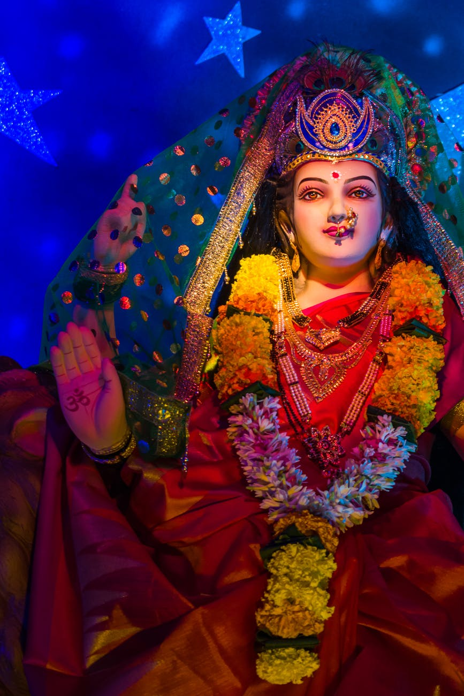

Maa Shailaputri
Daughter of the Mountain
मां शैलपुत्री, देवी दुर्गा के नौ रूपों में पहले स्वरूप हैं. नवरात्रि के पहले दिन उनकी पूजा की जाती है. शैलपुत्री का जन्म पर्वतराज हिमालय के घर हुआ था, इसलिए उनका नाम शैलपुत्री पड़ा. शैल का अर्थ है हिमालय.
Maa Brahmacharini
Austerity and Penance
देवी ब्रह्मचारिणी साक्षात ब्रह्म का स्वरूप है अर्थात तपस्या का मूर्तिमान रूप है। ब्रह्म का मतलब तपस्या होता है, तो वहीं चारिणी का मतलब आचरण करने वाली। इस तरह ब्रह्माचारिणी का अर्थ है- तप का आचरण करने वाली देवी। मां ब्रह्माचारिणी के दाहिने हाथ में मंत्र जपने की माला और बाएं में कमंडल है।

Maa Chandraghanta
Bravery and Protection
नवरात्रि की तृतीया तिथि पर मां दुर्गा की तीसरी शक्ति देवी चंद्रघंटा को समर्पित है. इनके मस्तक पर घंटे के आकार का अर्धचंद्र है, इसी कारण इन्हें चंद्रघंटा देवी कहा जाता है. मां चंद्रघंटा के पूजन से साधक को तीसरे मणिपुर चक्र के जाग्रत होने वाली सिद्धियां स्वत: प्राप्त हो जाती हैं, निर्णय लेने की क्षमता में वृद्धि होती है.

Maa Kushmanda
Creator of the Universe
मां कुष्मांडा शेर पर सवारी करते हुए प्रकट होती हैं। अष्टभुजाधारी मां, मस्तक पर रत्नजड़ित मुकुट धारण किए हुए हैं अत्यंत दिव्य रूप से सुशोभित हैं। मां कुष्मांडा ने अपनी आठ भुजाओं में कमंडल, कलश, कमल, सुदर्शन चक्र, गदा, धनुष, बाण और अक्षमाला धारण किया है। मां का यह रूप हमें जीवन शक्ति प्रदान करने वाला माना गया है।

Maa Skandamata
Maternal Love
मां स्कंदमाता चार भुजाओं वाली देवी हैं जो कि स्वामी कार्तिकेय को अपनी गोद में लेकर शेर पर विराजमान हैं। मां के दोनों हाथों में कमल शोभायमान हैं। इस रूप में मां समस्त ज्ञान, विज्ञान, धर्म, कर्म और कृषि उद्योग सहित पंच आवरणों से समाहित विद्यावाहिनी दुर्गा भी कहलाती हैं। मां के चेहरे पर सूर्य के समान तेज है।

Maa Katyayani
Fierce Devotion
मां कात्यायनी ब्रजमंडल की अधिष्ठात्री देवी हैं. गोपियों ने कृष्ण की प्राप्ति के लिए इनकी पूजा की थी. विवाह संबंधी मामलों के लिए इनकी पूजा अचूक होती है, योग्य और मनचाहा पति इनकी कृपा से प्राप्त होता है. ज्योतिष में बृहस्पति का सम्बन्ध इनसे माना जाता है.
Maa kalaratri
Fierce Darkness
माँ कालरात्रि दुष्टों का विनाश करने वाली हैं। दानव, दैत्य, राक्षस, भूत, प्रेत आदि इनके स्मरण मात्र से ही भयभीत होकर भाग जाते हैं। ये ग्रह-बाधाओं को भी दूर करने वाली हैं। इनके उपासकों को अग्नि-भय, जल-भय, जंतु-भय, शत्रु-भय, रात्रि-भय आदि कभी नहीं होते।

Maa Mahagauri
Purity and Calmness
जब मां की कठोर तपस्या से भगवान शिव प्रसन्न हुए तो उन्होंने मां को पत्नी के रूप में स्वीकार किया और इनके शरीर को गंगा के पवित्र जल से धोकर अत्यंत कांतिमय बना दिया, जिस कारण इनका काला रंग गौर वर्ण जैसा हो गया. इसके बाद मां पार्वती के इस स्वरूप को महागौरी के नाम से जाना गया
Maa Siddhidatri
Giver of Blessings